candidate/knockout-20260925 off c43588a.A comparable companies analysis that is not a comp statement. One cohort at a time goes down a fixed path: the table (the source, every number with its date) → the field (the football-field view of the comps, on its own, where outliers and filters get knocked out) → the cards (the same table cardified, in the plant-library idiom, with filters) → round 1, fit (the theme you state, the allocation tool's two toggles, and the editable rules under them; a name that fails is greyed with one full sentence) → round 2, comps (a round robin: every name plays every other on every row that plays; the standings seed the elimination, and you knock names out on the field) → round 3, timing (the Geiger with its date, RSI against its own year, days to earnings, sigma events) → the final (PICK / PASS / LATER with a reason, under the sleeve caps and the book-wide hard cap). It ran on UTILITIES, AI POWERTRAIN and the eight Station targets. It is a separate workshop URL under deliverables; nothing is wired into the cohort board or the allocation tab.
I read the Urth client designer for a measured property (460 SW 21st Rd), the properties list and the plant library before touching the workshop. What the designer does, in order:
What I borrowed, and where it sits in the workshop. Round 1 opens with state the theme: four themes on file (the AI trade · power for AI · defensive while the indexes are stretched · mega caps that already earn), each a set of the Hub's own cohort tags, each button carrying "n of N fit" and a verdict in the designer's idiom (fills the large-cap sleeve · thin: 2 large caps for a sleeve of 4 · cannot fill the large-cap sleeve); the numbers behind the buttons are in a table beneath, and a thin theme can still be chosen. The per-layer caps became the allocation tool's per-sleeve caps (4 large, 2 small, read from its DEFAULTS on 26 Sep), and the "≤ 3 colours" rule became the tool's hard cap on total names (12): the final shows "picks so far · large-cap sleeve 1 of 4 · small-cap sleeve 0 of 2 · book-wide 1 of 12" as the designer shows the palette so far, and a PICK that would break a cap is refused with a sentence. The reverse direction reads your LIKED list first and says, in a sentence, which theme it is telling you. The save is the same idea: theme, knockouts and decisions go to this browser's storage per group, and the proposed operator_decisions / operator_preferences tables are the "send my picks" the coordinator would wire later.
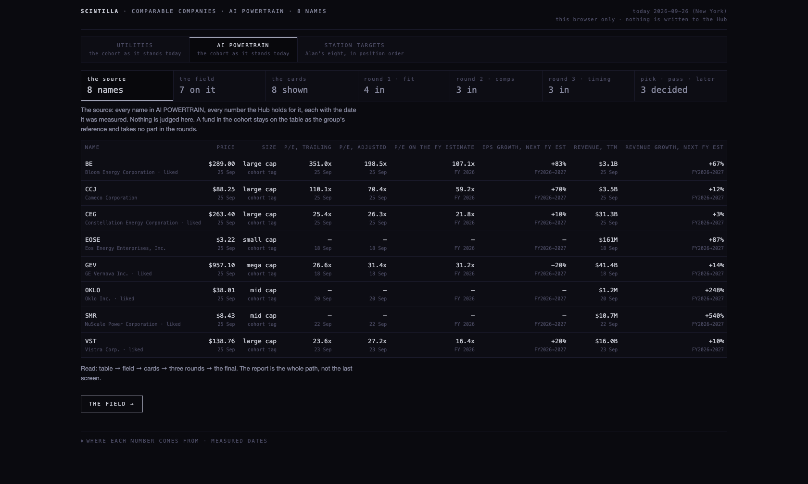
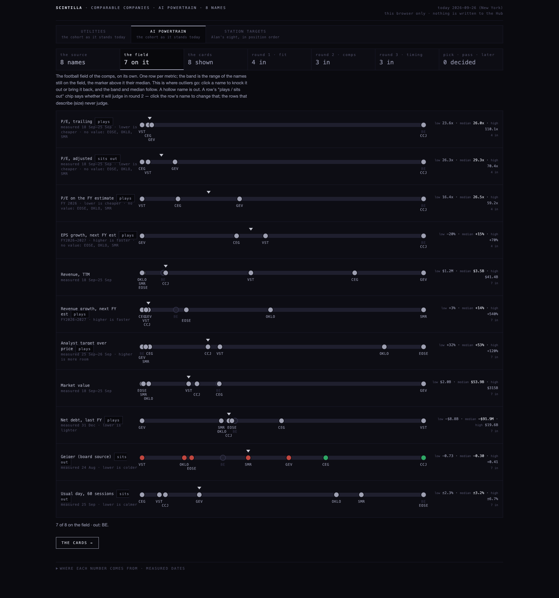
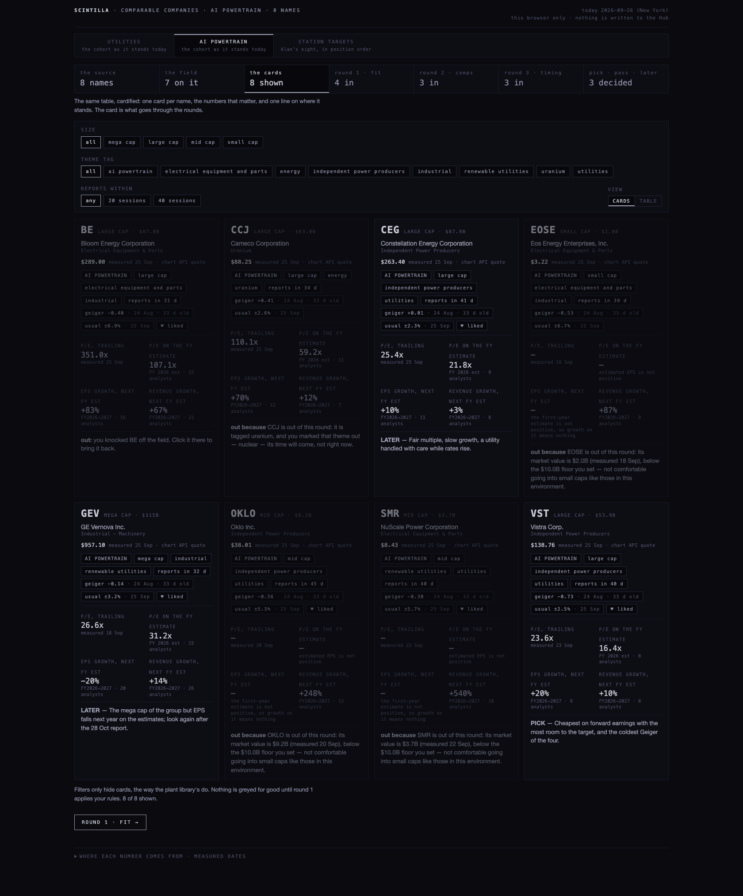
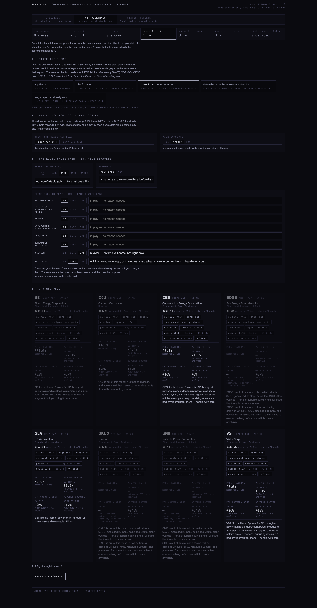
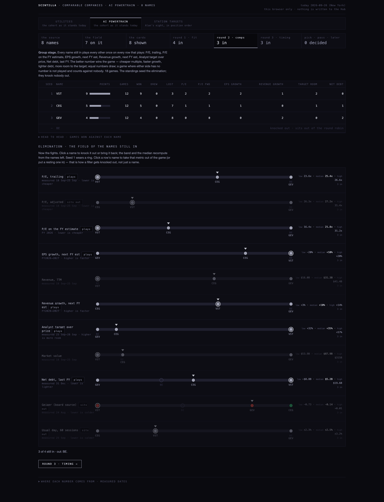
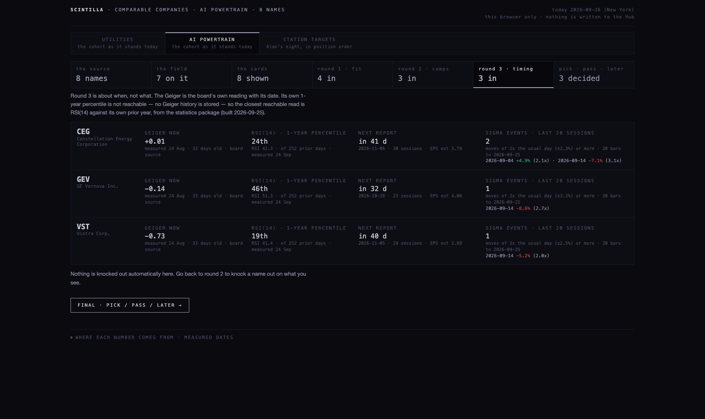
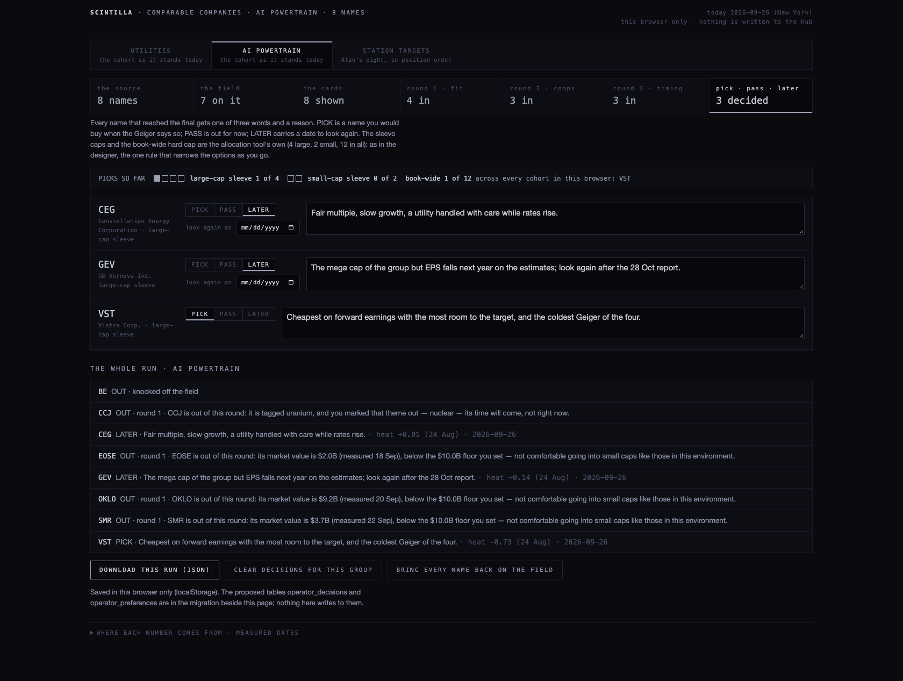
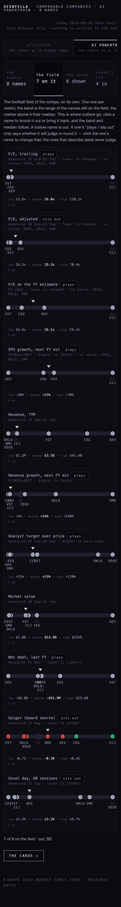
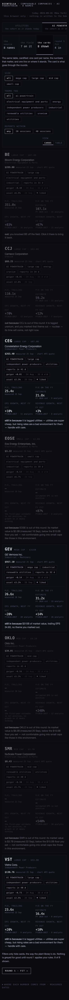
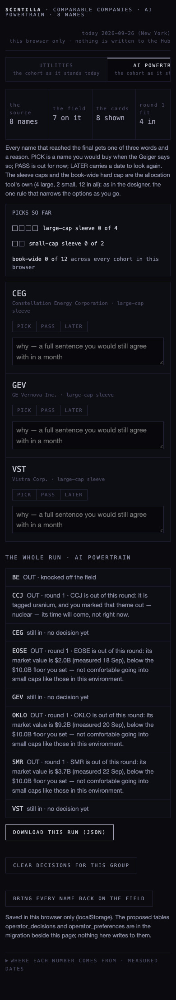
What is visible at 390: the field stacks label, track and readout in one column and stays usable; cards go single column; the strip scrolls sideways. Bunched names still overprint on a crowded row (this is the trade-off of a true 0–1 band; the fix is to knock the outlier out, which re-spreads the band).
Theme stated: power for AI. The liked list agrees: You already like BE, CEG, GEV, OKLO, SMR, VST; 6 of 6 fit "power for AI", so that is the theme the liked list is telling you.
BE is the outlier: 351.0x trailing and 107.1x on the FY 2026 estimate (measured 25 Sep) against 23.6x–26.6x and 16.4x–31.2x for the other three. It also carries the fastest growth on the estimates (EPS +83%, revenue +67% next FY) and no room to the target (−1%). I knocked it off the field. With it gone the P/E rows spread out and the medians mean something.
| seed | name | points | games | W–D–L | share |
|---|---|---|---|---|---|
| 1 | VST | 12 | 18 | 12–0–6 | 67% |
| 2 | BE | 8 | 18 | 8–0–10 | 44% |
| 3 | CEG | 8 | 18 | 8–0–10 | 44% |
| 4 | GEV | 8 | 18 | 8–0–10 | 44% |
After BE is knocked out the three left play 18 games: VST 9, CEG 5, GEV 4. VST wins on trailing P/E, forward P/E, EPS growth and room to the target; GEV wins on revenue growth and net debt (net cash of $8.8B at the last FY end); CEG is in the middle on everything.
| name | geiger · stamp | rsi(14) · 1-yr pct · date | next report | sigma events, last 20 |
|---|---|---|---|---|
| BE | −0.40 2026-08-24 | 56.2 · 54th 2026-09-24 | 2026-10-27 · 22 sessions | 0 none |
| CEG | +0.01 2026-08-24 | 42.3 · 24th 2026-09-24 | 2026-11-06 · 30 sessions | 2 2026-09-04 +4.9% (2.1x) · 2026-09-14 −7.1% (3.1x) |
| GEV | −0.14 2026-08-24 | 51.3 · 46th 2026-09-24 | 2026-10-28 · 23 sessions | 1 2026-09-14 −8.6% (2.7x) |
| VST | −0.73 2026-08-24 | 41.4 · 19th 2026-09-24 | 2026-11-05 · 29 sessions | 1 2026-09-14 −5.2% (2.0x) |
Theme stated: defensive while the indexes are stretched. 22 names; XLU is a fund and stays on the table as the reference. The theme fits every company in the cohort through the cohort's own tag, so the theme step narrows nothing here; the rules do. You already like CEG, OKLO, SMR, VST; 4 of 4 fit "defensive while the indexes are stretched", so that is the theme the liked list is telling you.
Round 1: 19 of 21 companies go through. OKLO ($9.2B, measured 20 Sep) and SMR ($3.7B, 22 Sep) fail the $10B floor and the earnings rule. Every other name stays in with care on Alan's own reason ("utilities are super cheap, but rising rates are a bad environment for them — handle with care"); at risk level LOW that same reason would put the whole cohort out, which is what the toggle is for.
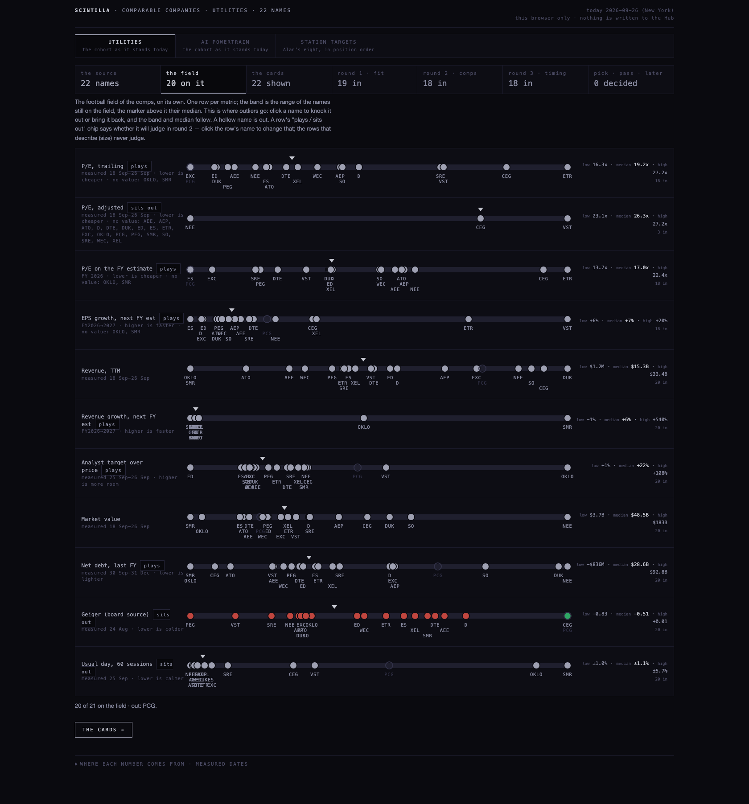
| seed | name | points | games | W–D–L | share |
|---|---|---|---|---|---|
| 1 | VST | 83 | 108 | 83–0–25 | 77% |
| 2 | PCG | 73 | 108 | 73–0–35 | 68% |
| 3 | XEL | 73 | 108 | 73–0–35 | 68% |
| 4 | AEE | 64 | 108 | 64–0–44 | 59% |
| 5 | PEG | 63 | 108 | 63–0–45 | 58% |
| 6 | DTE | 61 | 108 | 61–0–47 | 56% |
| 7 | NEE | 58 | 108 | 58–0–50 | 54% |
| 8 | ATO | 53 | 108 | 53–0–55 | 49% |
…down to SO in 19th with 34 points. On a cohort this size the round robin is the round that does the work: it turns twenty near-identical regulated names into an order. VST leads (23.6x trailing, 16.4x forward, +20% EPS growth, +57% room); PCG and XEL follow (PCG at 9.6x trailing and 7.5x forward is the cheapest name in the Hub's utilities, with +49% room, and heavy debt).
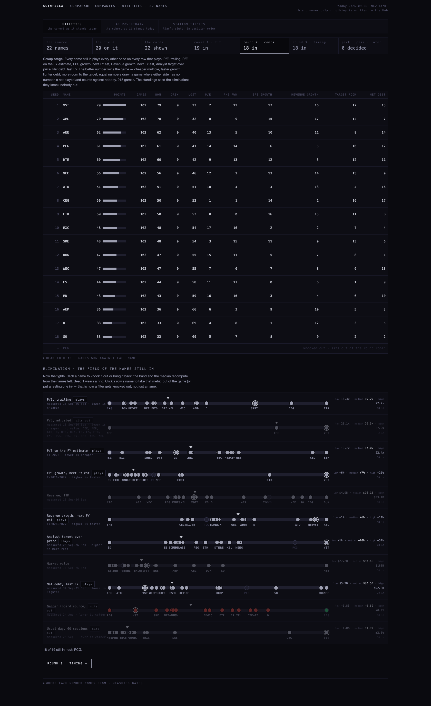
Read as measured on 24 Sep, 17 of the 19 names have RSI(14) at or under the 3rd percentile of their own prior year (AEE 21.6, DTE 15.6, PEG 18.4, NEE 19.3): the regulated utilities were sold hard in September. The sigma events say the same: PCG −20.1% on 31 Aug (5.8x its usual day), CEG −7.1% on 14 Sep, NEE −2.8% and PEG −2.6% on 23 Sep. PCG reports on 22 Oct, 19 sessions away, inside the 20-session line.
| name | geiger · stamp | rsi(14) · 1-yr pct · date | next report | sigma events, last 20 |
|---|---|---|---|---|
| AEE | −0.26 2026-08-24 | 21.6 · 0th 2026-09-24 | 2026-11-04 · 28 sessions | 0 none |
| AEP | −0.59 2026-08-24 | 28.6 · 0th 2026-09-24 | 2026-10-29 · 24 sessions | 0 none |
| ATO | −0.58 2026-08-24 | 22.8 · 0th 2026-09-24 | 2026-11-04 · 28 sessions | 0 none |
| CEG | +0.01 2026-08-24 | 42.3 · 24th 2026-09-24 | 2026-11-06 · 30 sessions | 2 2026-09-04 +4.9% (2.1x) · 2026-09-14 −7.1% (3.1x) |
| D | −0.22 2026-08-24 | 21.6 · 0th 2026-09-24 | 2026-10-30 · 25 sessions | 1 2026-09-23 −2.0% (2.0x) |
| DTE | −0.29 2026-08-24 | 15.6 · 0th 2026-09-24 | 2026-10-29 · 24 sessions | 0 none |
| DUK | −0.58 2026-08-24 | 24 · 0th 2026-09-24 | 2026-11-05 · 29 sessions | 0 none |
| ED | −0.46 2026-08-24 | 33.6 · 0th 2026-09-24 | 2026-11-05 · 29 sessions | 0 none |
| ES | −0.36 2026-08-24 | 25.2 · 0th 2026-09-24 | 2026-11-03 · 27 sessions | 0 none |
| ETR | −0.40 2026-08-24 | 25.2 · 0th 2026-09-24 | 2026-11-04 · 28 sessions | 0 none |
| EXC | −0.58 2026-08-24 | 21.9 · 0th 2026-09-24 | 2026-11-03 · 27 sessions | 1 2026-09-23 −2.7% (2.1x) |
| NEE | −0.61 2026-08-24 | 19.3 · 0th 2026-09-24 | 2026-10-27 · 22 sessions | 2 2026-08-28 −1.9% (2.0x) · 2026-09-23 −2.8% (2.9x) |
| PCG | +0.44 2026-08-24 | 27.9 · 1th 2026-09-24 | 2026-10-22 · 19 sessions REPORTS INSIDE 20 SESSIONS | 2 2026-08-28 −7.5% (2.2x) · 2026-08-31 −20.1% (5.8x) |
| PEG | −0.83 2026-08-24 | 18.4 · 0th 2026-09-24 | 2026-11-02 · 26 sessions | 3 2026-09-09 −2.2% (2.2x) · 2026-09-14 −2.0% (2.0x) · 2026-09-23 −2.6% (2.6x) |
| SO | −0.57 2026-08-24 | 21.5 · 0th 2026-09-24 | 2026-10-29 · 24 sessions | 0 none |
| SRE | −0.65 2026-08-24 | 28.9 · 2th 2026-09-24 | 2026-11-04 · 28 sessions | 2 2026-08-31 −3.1% (2.1x) · 2026-09-01 +3.1% (2.2x) |
| VST | −0.73 2026-08-24 | 41.4 · 19th 2026-09-24 | 2026-11-05 · 29 sessions | 1 2026-09-14 −5.2% (2.0x) |
| WEC | −0.44 2026-08-24 | 29.4 · 3th 2026-09-24 | 2026-10-29 · 24 sessions | 0 none |
| XEL | −0.33 2026-08-24 | 25.5 · 0th 2026-09-24 | 2026-10-29 · 24 sessions | 0 none |
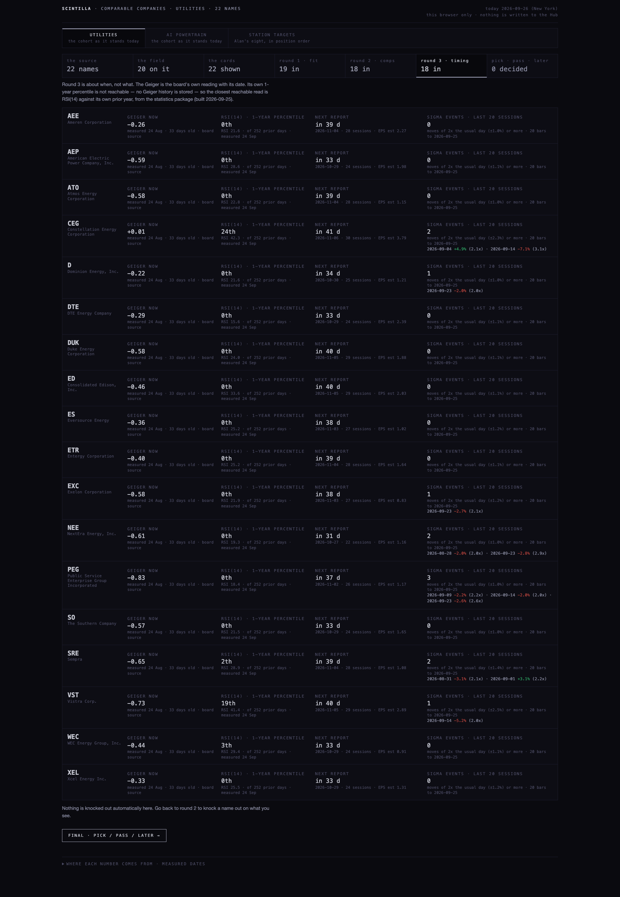
The final, as I would have called it: VST PICK (already the pick of scenario b; it is the same name and the same sleeve, and the book-wide count would hold it once). PCG LATER, look again after 22 Oct: the cheapest name and the most washed out, but a −20% day five weeks ago is a reason to wait for the report. XEL and AEE LATER on the sector reason. The rest PASS for now, with the care reason as the sentence.
The bands below are of the names still in after round 1 (the same rules, the same date), so the two groups are compared like for like.
| row | utilities · n | range | median | powertrain · n | range | median |
|---|---|---|---|---|---|---|
| P/E, trailing | 19 | 9.6x – 27.2x | 19.1x | 4 | 23.6x – 351.0x | 26.0x |
| P/E, adjusted | 3 | 23.1x – 27.2x | 26.2x | 4 | 26.2x – 198.5x | 29.3x |
| P/E on the FY estimate | 19 | 7.5x – 22.4x | 17.0x | 4 | 16.4x – 107.1x | 26.5x |
| EPS growth, next FY est | 19 | +6% – +20% | +8% | 4 | −20% – +83% | +15% |
| Revenue, TTM | 19 | $4.9B – $33.4B | $16.2B | 4 | $3.1B – $41.4B | $23.6B |
| Revenue growth, next FY est | 19 | −1% – +11% | +5% | 4 | +3% – +67% | +12% |
| Analyst target over price | 19 | +1% – +57% | +20% | 4 | −1% – +57% | +33% |
| Market value | 19 | $27.2B – $183B | $50.2B | 4 | $53.9B – $315B | $87.4B |
| Net debt, last FY | 19 | $5.2B – $92.8B | $30.9B | 4 | −$8.8B – $19.6B | $2.9B |
| Geiger (board source) | 19 | −0.83 – +0.44 | −0.46 | 4 | −0.73 – +0.01 | −0.27 |
| Usual day, 60 sessions | 19 | ±1.0% – ±3.5% | ±1.1% | 4 | ±2.3% – ±6.9% | ±2.9% |
Read from public.station_targets in position order (set 25 Sep): GOOGL, NBIS, AVGO, BE, AMZN, VST, MU, WMT. No theme stated (the eight are a hand list); the reverse direction says: You already like GOOGL, NBIS, AVGO, BE, AMZN, VST, MU, WMT; 6 of 8 fit "the AI trade", so that is the theme the liked list is telling you. With "the AI trade" stated, WMT and VST would be greyed with that sentence, and AMZN would fit only through the mega-cap theme; I left the theme at "any" so all eight could play.
Round 1: NBIS is out on the earnings rule (EPS −0.13 TTM, measured 20 Sep; the FY 2026 estimate is −2.05 too). Seven go through, VST with care.
The field: BE again the outlier at 351x; knocked out. Round 2:
| seed | name | points | games | W–D–L | share |
|---|---|---|---|---|---|
| 1 | MU | 24 | 36 | 24–0–12 | 67% |
| 2 | VST | 23 | 36 | 23–0–13 | 64% |
| 3 | AVGO | 20 | 36 | 20–0–16 | 56% |
| 4 | GOOGL | 19 | 36 | 19–0–17 | 53% |
| 5 | BE | 18 | 36 | 18–0–18 | 50% |
| 6 | AMZN | 15 | 36 | 15–0–21 | 42% |
| 7 | WMT | 7 | 36 | 7–0–29 | 19% |
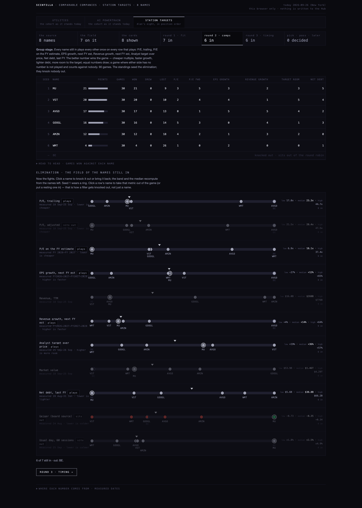
Round 3: MU reports on 30 Sep, three sessions away, and wears the REPORTS INSIDE 20 SESSIONS flag; it also carries the hottest Geiger of the group on the board's source (+0.34 on 24 Aug) and RSI at the 59th percentile. So the seed-1 name is the one round 3 says to wait on. GOOGL (17.8x trailing, EPS −27% next FY on the estimates, RSI 36th) and AMZN (20.1x, EPS −17%) are the two mega caps whose next-year EPS falls on the estimates; that row is the one to look at before trusting the trailing multiple.
| name | geiger · stamp | rsi(14) · 1-yr pct · date | next report | sigma events, last 20 |
|---|---|---|---|---|
| GOOGL | −0.41 2026-08-24 | 48.5 · 36th 2026-09-24 | 2026-10-28 · 23 sessions | 0 none |
| AVGO | −0.30 2026-08-24 | 42 · 17th 2026-09-24 | 2026-12-09 · 53 sessions | 0 none |
| BE | −0.40 2026-08-24 | 56.2 · 54th 2026-09-24 | 2026-10-27 · 22 sessions | 0 none |
| AMZN | −0.09 2026-08-24 | 44.2 · 29th 2026-09-24 | 2026-10-29 · 24 sessions | 0 none |
| VST | −0.73 2026-08-24 | 41.4 · 19th 2026-09-24 | 2026-11-05 · 29 sessions | 1 2026-09-14 −5.2% (2.0x) |
| MU | +0.34 2026-08-24 | 63 · 59th 2026-09-24 | 2026-09-30 · 3 sessions REPORTS INSIDE 20 SESSIONS | 0 none |
| WMT | −0.50 2026-08-24 | 48.2 · 38th 2026-09-24 | 2026-11-19 · 39 sessions | 0 none |
The final, as I would have called it: VST PICK (the third time; one name, one sleeve). MU LATER, look again on 1 Oct after the report. AVGO LATER (44.7x trailing but 30.3x forward on +65% EPS growth; reports 9 Dec). GOOGL and AMZN LATER on the falling-EPS row. WMT PASS: 39.8x trailing for +4% revenue growth, last in the round robin by a distance. BE PASS as the outlier, NBIS out on the rule until it earns.
| read | what | measured |
|---|---|---|
| ticker_cohorts | cohort members and every tag a name carries (size class, themes); the theme step and the fit rules read these | as stored |
| station_targets | the eight targets in position order (scenario c) | set 25 Sep |
| fundamentals | price on file, market value, trailing and adjusted P/E, EPS TTM, revenue TTM | updated_ts, 18–26 Sep by name |
| analyst_estimates (annual) | EPS and revenue estimates by fiscal year and the average price target → P/E on the FY estimate, EPS growth next FY, revenue growth next FY, room to the target | written 25–26 Sep; the fiscal year used is the first that ends on or after today |
| balance_history (FY) | net debt at the last fiscal year end | fiscal dates 31 Dec 2025 (most), 31 Aug 2026 (MU), 31 Jan 2026 (WMT) |
| composite_staged tf=D | the Geiger, the board's own source; SPY and IWM for the allocation tool's split | stamped 24 Aug 2026 for every name read — 33 days old, said on every screen |
| earnings_events | next report date and its EPS estimate; sessions are weekdays, holidays not subtracted | dates from today |
| ticker_heartbeat_daily | the usual day over 60 sessions | 25 Sep |
| company_profile | name, industry, fund or not | as stored |
| hub_favorites | the LIKED list, the reverse direction of the theme step | 72 names liked |
| chart API /quotes | the price on the card (the fundamentals price is the fallback, and the card says which) | 25 Sep session, labelled stale by the API on a Saturday |
| chart API /candles tf=1d | finished daily bars → sigma events over the last 20 sessions (a move of 2x the usual day or more) | bars to 25 Sep |
| research/statistics/data/summary.json | RSI(14) and its 1-year percentile (the statistics package) | built 25 Sep, source date 24 Sep |
| allocation.scintillahub.ai | the $10B small/large line (tickerCls), the sleeve caps nLC 4 / nSC 2, the hard cap maxTotal 12, and the split formula LC = 50% + (IWM − SPY) × 50% capped 20–80 (today 51% / 49% from SPY +0.18 and IWM +0.19, 24 Aug) | read 26 Sep |
The A1 lane's allocation branches exist (allocation-rebuild-20260924 is the latest) but they carry screener rails (a cash floor, a liquidity floor, a quality line), not a cap-class or risk-exposure toggle. So the greying rules here are my own editable defaults, stated on the round-1 screen: large cap only (the tool's $10B line), risk MEDIUM (a name must earn; handle-with-care themes stay in, flagged; at LOW they are out; at HIGH the earnings rule is off), uranium OUT and utilities CARE with Alan's own sentences as the seeds, reports inside 20 sessions as the flag.
The workshop writes to this browser only: preferences (k1.prefs), the theme per group, the knockouts per group, and the decisions per group, each with the heat at the moment and the date. DOWNLOAD THIS RUN gives the same as a JSON file. The proposed tables are in supabase/migrations/20260925_operator_decisions.sql: operator_decisions (ticker, cohort, decision, reason, heat_at, made_at, expires_on) and operator_preferences (key, value, reason, updated_at), additive only, rollback written, no grants (the anon key must not write them until the coordinator decides how the operator authenticates). The migration is not applied; the coordinator does that. The reasons to mark: the cap floor reason, the earnings reason, one reason per theme marked OUT or CARE, and one sentence per decision that you would still agree with in a month.
tests/knockout-field.test.mjs: 40 tests on the arithmetic (band, median, knockouts, forward P/E and the two growth rows, sessions, sigma events, the fit sentences, the theme step, the sleeve caps, the round robin, the scenarios), on the page (imports the tested file, carries the seven screens and the three scenarios, reads station_targets in position order, keeps the house rules: no white, every colour a grey except the up/down pair, no key in the page, no write to the proposed tables), and on the migration. All 40 pass. The full suite was run against the five known failures; the result is in the return note. Screens: sixteen headless captures at 1680 and 390 in screens/, every one opened and looked at; none shipped blank.
The page takes ?scenario=UTILITIES|AI_POWERTRAIN|STATION for the three, and ?cohort=NAME for any other cohort, one at a time, with the same rules and the same saved preferences. Each cohort keeps its own theme, knockouts and decisions in the browser; the book-wide hard cap counts picks across all of them, which is what makes a whole-market pass consistent. A run can be handed over in the URL (&out=BE&dec=VST:PICK:reason), which is how the screens here were composed. Scope for now stays the three; the cohort remap comes first.
/__chart (the page uses it only on localhost); on the Hub's domain the page calls the API directly.Adopt the path as the comps method, with the round robin as the group stage and the field as the elimination, and before it is used to decide anything give round 3 a real Geiger: refresh composite_staged (24 Aug on the board's source today) and store a daily Geiger history so its own 1-year percentile replaces the RSI stand-in. The three scenarios agree on one name (VST first in every round robin, PICK in every final); that agreement is worth more once the timing round reads today's Geiger rather than August's.